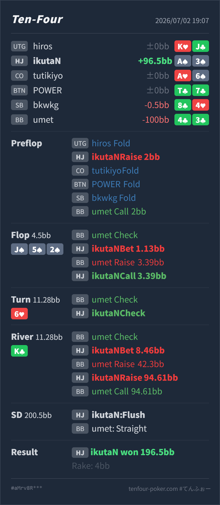

T4 HAND REVIEW
HJ A♠3♠ の BB defend pot / monotone flop nut flush レビュー
GTO基準で大きくズレたハンドではありません。flop の小さめ c-bet、raise への call、river で nuts に対して再raise all-in した判断は良いです。ただし turn は相手の check に対して、trap だけでなく value bet も強く検討したいノードです。
Hero: HJ
A♠ 3♠Villain: BB
4♣ 3♣Board:
J♠ 5♠ 2♠ 6♥ K♣- 主要論点: monotone flop で nut flush を持ったとき、相手の check-raise に対してどこまで強く返すか。
- GTO基準の総評: flop は小さくbetしてよく、raise にはcallが自然です。turn check-backは悪くありませんが、相手に lower flush、set、pair + spade、straight draw が残るため、value bet も候補です。
- 次回の判断基準: nuts級の hand でも、相手がcallできる下のvalueが多い street では「隠す」より「取る」を先に見る。
- 5枚役確認: River時点のHeroは
A♠ J♠ 5♠ 3♠ 2♠のAハイフラッシュです。board は unpaired で、HeroがA♠を持つため上位フラッシュはなく nuts です。
ハンド要約
- Hero
- HJ
A♠ 3♠ - Villain
- BB
4♣ 3♣ - 形式
- T4 6MAX Cash
- Board
J♠ 5♠ 2♠ 6♥ K♣- ライン
- HJ openにBB defend。flopでHJが小さくbetし、BB check-raiseにcall。turnはcheck-check。riverでHJ bet、BB raise、HJが再raiseしてBB call
- Showdown
- Hero: Aハイフラッシュ / BB: 6ハイストレート
- Result
- HJ Hero won
196.5BB, rake4BB

判断のズレ
| 論点 | その場で置きがちな見立て | どこがズレやすいか | 次回の基準 |
|---|---|---|---|
| flop raise への対応 | nut flush なので早く大きく返して取り切りたい | BBのcheck-raise rangeには、lower flushだけでなく、set、pair + spade、Aなしの強いspade、straight draw系のbluffが混ざります。ここで3betすると、弱い継続部分やbluffを降ろしやすくなります。 | monotone flopでnutsを持ってraiseされたら、まずcallで相手のpolar rangeを残す。3betは相手がlower flushを降りないと読めるときに寄せる |
| turn の価値取り | flopでraiseされているので、turn checkにはtrap継続でよさそう | turn 6♥ はBBの 43 や一部のstraight drawを改善させますが、HeroのAハイフラッシュはまだ最上位です。BBがlower flushやspade付きペアでcheck-callできるなら、ここでbetしないとriverだけでは取り切れないことがあります。 | nuts級でも相手のcall対象が多いならbetを優先。check-backは相手のriver bluffを誘う意図が明確なときに使う |
ストリート別レビュー
| ストリート | その時点の見え方 | 実ハンドの位置づけ | 評価 | その場の一手 |
|---|---|---|---|---|
| Preflop | HJの2BB openにBBがdefendする標準的な single-raised pot です。BBにはsuited hand、低めのconnector、pocket pairが残ります。 | A♠3♠ はHJでは広め寄りですが、suited Aとしてopen候補に入るhandです。 | 可 | openで問題ありません。BB call後は、BB側に低い連結カードとspade絡みが多く残る前提で進めます。 |
Flop J♠ 5♠ 2♠ | HJにはA♠X♠や強いoverpair + spadeがありますが、BBにもsuited defend由来のflush、set、pair + spade、straight drawが残ります。 | HeroはAハイフラッシュでnutsです。加えて3♠によりwheel方向の要素もありますが、主価値は完成済みのnut flushです。 | 良い | 小さめbetは自然です。check-raiseに対してはcallがよく、相手のlower valueとbluffを残せます。 |
Turn 6♥ | BBのflop raise後なので、lower flush、set、spade付きJx、43、74系が残ります。6は一部のstraightを完成させますが、flushの上下関係は変わりません。 | Heroは引き続きnutsです。相手のlower flushやstraightからvalueを取れる位置です。 | 可だがvalue betも有力 | check-backは相手のriver betを誘う意味があります。ただし相手がcheck-callできるhandも多いため、半pot前後でbetしてriver shoveを作るラインも強く検討します。 |
River K♣ | BB check後、Heroのbetに対する大きいraiseはpolarです。lower flush、straightの過剰value、一部のbluffが候補になります。 | Heroはboard unpairedのAハイフラッシュでnutsです。相手のraise rangeに対して降りる理由はありません。 | 良い | 再raise all-in相当でよいです。call止めにすると、lower flushやstraightの過剰valueから最大値を取り逃がします。 |
持ち帰り
- monotone flopでnut flushを持っても、flop raiseにすぐ3betせず、相手のbluffとlower valueを残すcallが強い。
- turnでnuts級を持つときは、trapだけでなく、相手がcallできる下のvalueの量を先に数える。
- riverでboardがpairせず、Aハイフラッシュがnutsのままなら、大きいraiseにも再raiseで取り切る判断を残す。
exploit 補足
- 実際のBBは
4♣3♣で、flop check-raiseはstraight draw、turnでstraight完成、riverでstraightを大きくraiseしています。 - この相手がmonotone flopでnon-spade drawをraiseし、riverでflush完成ボードにもstraightを強くvalue化するなら、Heroのnut flush級は強く取り切ってよいです。一方、medium flushやsetでは同じriver raiseに対して過信しない方がよいです。